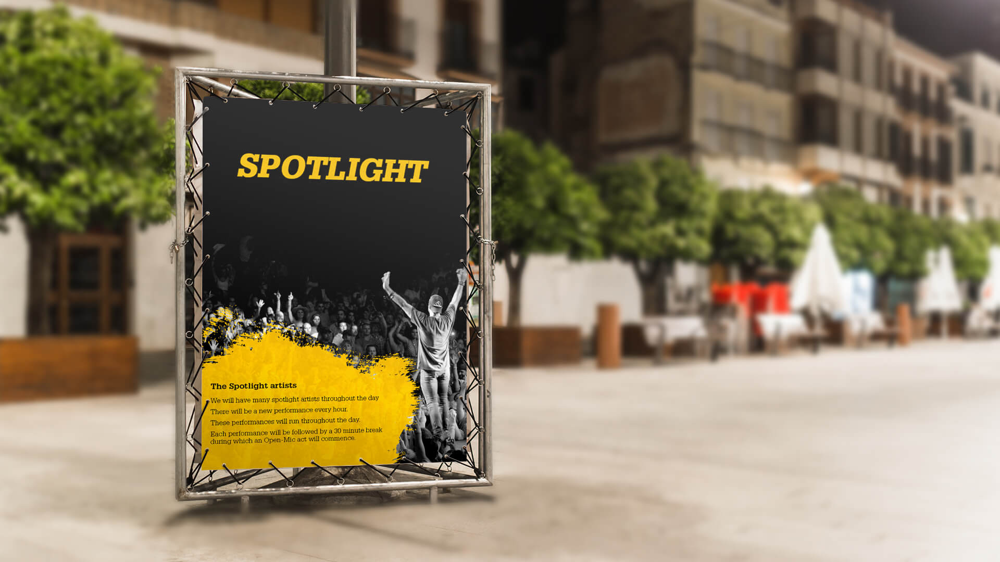
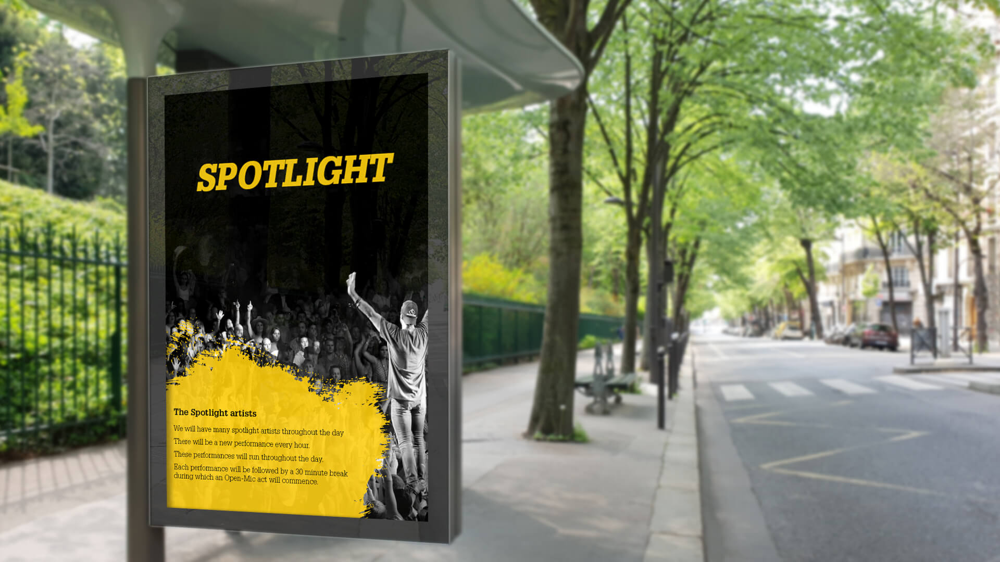

Name the format
Spotlight leads as the unmistakable programme identity.
Unwind · Event Presentation

Project overview
Unwind Spotlight needed an event-presentation system that could introduce its artist format while feeling as immediate and energetic as a live performance.
The design balances practical information—hourly performances, breaks and open-mic moments—with a bold visual world built from crowds, performers and a disruptive painted field.
The visual idea
Monochrome crowd photography creates the atmosphere of a live venue. A single yellow brush field acts like light breaking across the stage—holding information without losing the rawness of the event.
The performer silhouette connects the programme directly to participation, while the oversized title remains readable from a distance.
The information system
Spotlight leads as the unmistakable programme identity.
Artist and audience imagery establish a live-performance world.
Compact copy clarifies hourly acts, breaks and open-mic sessions.
The raised-arm performer makes the experience feel open and active.
The work in context
The supplied compositions are displayed in full, preserving the contrast between empty dark space, the crowd image and the yellow information field.


The outcome
The presentation turns a programme explanation into part of the event experience—clear enough to guide an audience and expressive enough to build anticipation.
The programme name and core details separate immediately.
Black, white and yellow form a distinctive event signature.
Information feels embedded in the performance world.
Inform the crowd.Build the anticipation.
Need information with impact?